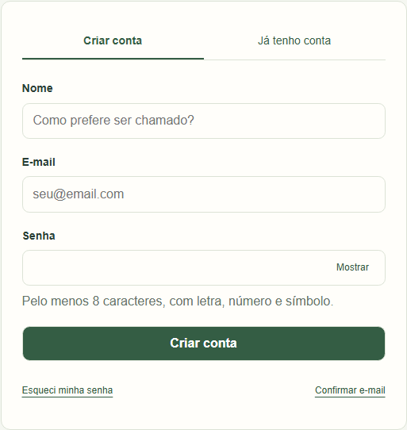
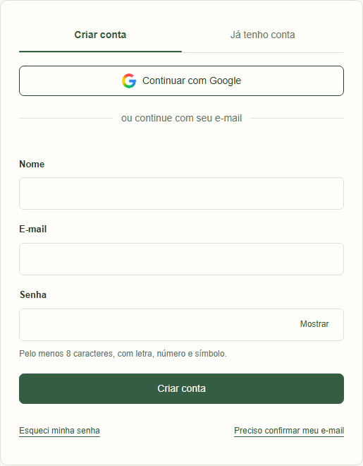
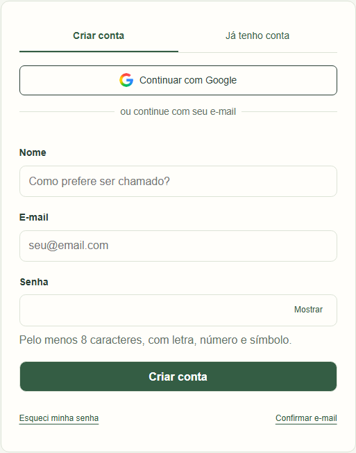
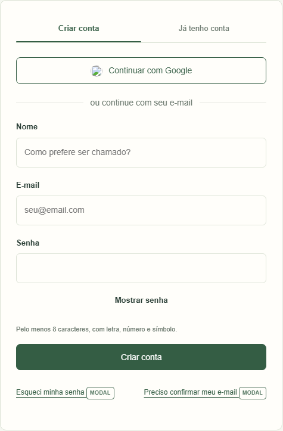
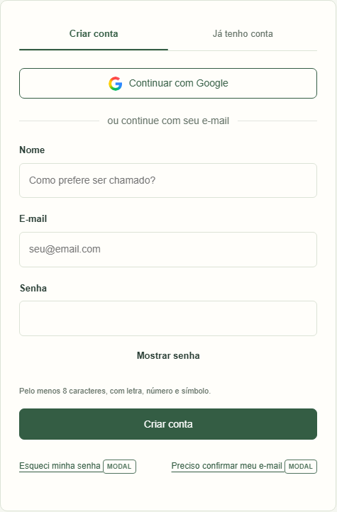
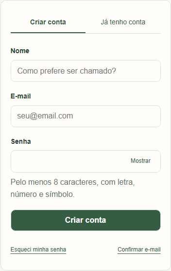
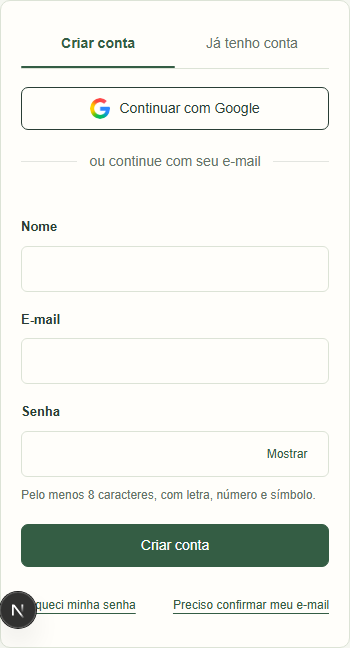
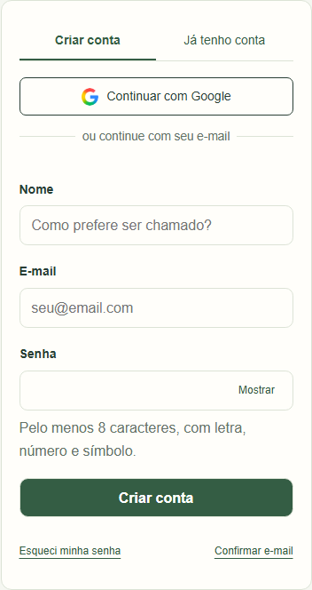
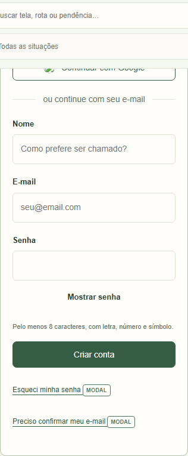
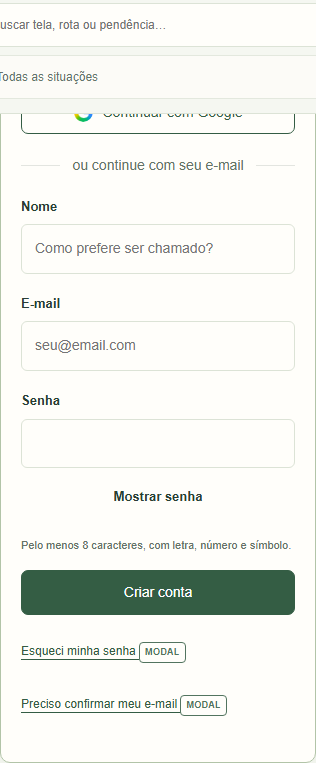

Angular v4.0.0-alpha.25, Next.js v3.11.1 e Atlas vivo. Edge local, larguras de 1440 e 390 pixels. O botão estava oculto na prévia Angular. No Atlas, a imagem anterior não carregava. O botão é compartilhado entre os modos de cadastro e login. As capturas mostram o cadastro.
Angular local · Next.js local · Atlas vivo









